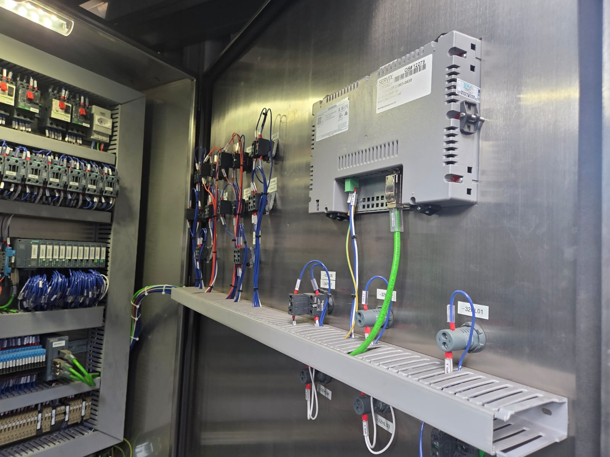

Máquina comandada por relés vira máquina com CLP, IHM e diagnóstico
Retrofit de comando eletromecânico para arquitetura CLP + IHM em máquina de blocos de concreto
A máquina operava com o comando original de fábrica: seletor rotativo passo a passo, contatores e relés. Não havia programa, diagrama atualizado nem qualquer diagnóstico — quando a máquina parava, a manutenção descobria a causa por tentativa e erro, medindo bornes. Componentes do comando já estavam fora de linha, e a lógica de operação existia apenas na cabeça de quem operava o equipamento há anos.
O resultadoA máquina saiu de zero diagnóstico para um sistema em que operador e mantenedor veem na tela exatamente qual condição impede a partida ou derrubou o ciclo. Acabou a dependência de componentes de comando obsoletos e do conhecimento não documentado, e a planta passou a ter programa comentado, lista de I/O e descritivo funcional em mãos — sem depender do fabricante original para qualquer alteração.
- Levantamento em campo e engenharia reversa da lógica: reconstrução documentada de toda a sequência de operação a partir do comando existente, transformada em descritivo funcional aprovado antes de programar.
- Mapeamento de 196 pontos de I/O em duas camadas, com tabela de símbolos global e POUs de leitura e escrita de I/O com arquitetura de override — o programa fica legível e a manutenção consegue forçar um ponto sem quebrar a lógica.
- Nova arquitetura CLP + IHM com CLP Delta série AS e interface de operação, substituindo integralmente o comando eletromecânico.
- Base mestre de 98 alarmes classificados e priorizados segundo ISA-18.2 / IEC 62682, com telas de intertravamento e interface de alta performance segundo ISA-101.
- Análise da distribuição 24 Vcc com estudo de seletividade e adequação documental conforme IEC 61082, 81346 e 61355 — a máquina passou a ter documentação elétrica coerente com a instalação real.

Plataforma: CLP Delta série AS (DIADesigner) e IHM · Linguagens: Ladder e SCL · Normas: ISA-18.2 / IEC 62682, ISA-101, NR-12, IEC 61082 / 81346 / 61355 · Também aplicável em: Siemens S7-1200 e S7-1500 (TIA Portal), com migração de IHM.
Tem máquina antiga rodando em relé, sem documentação e sem peça de reposição?
Comece por um Diagnóstico de Automação
Um dia na sua planta, relatório técnico em até cinco dias úteis, escopo e valor fechados antes do início. O relatório é seu, com ou sem contratação da execução.